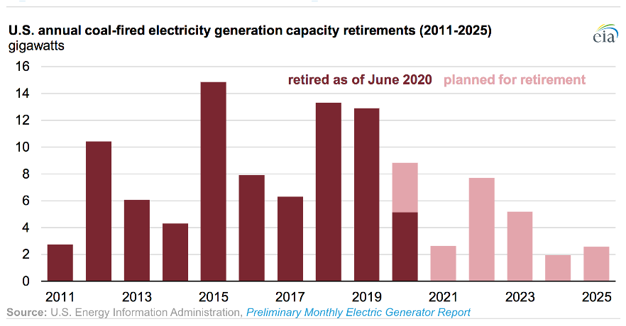

Energy transitions…
Gas-to-induction: What are the potential benefits, barriers, and facilitators of this transition in NYC?
The adoption of electric and induction stoves has increasingly garnered attention across the country due to the contribution of gas to carbon emissions and to indoor air pollution. I have been working with WE ACT for Environmental Justice on a pilot program called ‘Out of Gas, In with Justice’ designed to evaluate the feasibility and air quality benefits of transitioning from gas to induction stoves in affordable housing in NYC. This pilot provides an unprecedented opportunity to assess the barriers and facilitators of gas-to-induction from a user perspective and through an equity lens.
Chef Siya leading a cooking demo on an induction stove
Gender: A driver of the intra-household distribution of energy transition benefits in Ghana?
Globally, nearly 3 billion people cook with traditional stoves and solid fuels resulting in exposure to household air pollution, the largest energy-related health risk. Most studies have focused on documenting the burden of household air pollution among women since they are usually responsible for cooking and fuel collection. Using a randomized controlled trial of charcoal to gas transition in a rapidly growing peri-urban setting of central Ghana, this project characterizes the gender-dependent distribution of air pollution reduction benefits and assess gender dynamics in the context of energy-related decision making.
Focus group on intra-household dynamics with study participants

Has the transition away from coal improved racial/ethnic disparities in preterm birth in the US?
This project was driven by my interest in the distribution of co-benefits from energy transitions among historically marginalized groups in the United States. Coal has historically been a primary energy source in the United States, but competition from low-cost natural gas and the implementation of new regulations have led to increased retirements and retrofits of coal-fired power plants. I led this study to assess the potential role of the transition away from coal in reducing disparities in preterm birth, the health outcome with one of the largest Black/White disparities.
Coal-fired power plants retirements in the US

… And approaches to better evaluate them
Non-linear modeling of racial/ethnic disparities in air pollution exposure
Most studies have generally quantified racial/ethnic disparities in air pollution exposure using population-weighted averages, which can mask the shape and magnitude of the relationship. Here, we explored departures from linearity in the relationship between racial/ethnic composition and PM2.5 concentration across the United States. We also quantitatively compared the strength of the nonlinear association to the linear one and identified segments of the population for whom exposure has been substantially underestimated.
Long-term exposure modeling for mother/child pairs in Ghana
Air pollution epidemiological studies usually rely on estimates of long-term exposure to air pollutants, which are difficult to ascertain. This problem is accentuated in settings where sources of personal exposure differ from those of ambient concentrations, including household air pollution environments where cooking is an important source. Here, we generated a modeling approach that supports the feasibility of predicting usual personal exposure to PM2.5 using short-term measurements in such settings, which could be used to evaluate interventions.